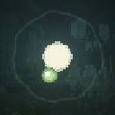
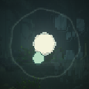
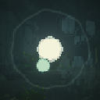
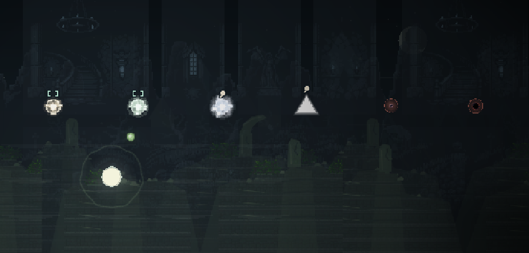

Wispbound · art review
A flatter Collector
Two mint pixel orbs in the real game. The current art stays the default until you choose.
Same course, seed, Lift inputs and Collector motion. Switch art at the same instant. The real HUD and terrain remain in view.
Watch the orbit closely
2× game pixelsDepth comes from growing in front, shrinking behind and passing across the Wisp. Fetch and return use the same flight paths. This inset follows the Wisp; the full game above keeps its normal camera.
Compare the same frame
Native 1× cropsLarger in front · 0.20 s. The mint face stays flat.



Try a direction in the card pilot
These links select art for that visit. They keep the same size, hitbox and abilities.
Which Sparks can Collector fetch?
Corner markers identify eligible Sparks in the live game. This separate matched scene shows how learning Handling expands eligibility.



About these real-game captures
Six seconds of the full application at a 900 × 405 phone landscape layout. The production renderer, authored Pinewood course and ordinary Lift/Collector behavior are used. All Sparks belong to the course. Position, depth, fetch phase and inputs match exactly in all three recordings.
Only the Collector source pixels and its matching palette differ. A has two inks. B adds a third ink at the stepped contour corners. Neither has a highlight, rings or appendages. The menu portraits above use those same sprites. The crop stills are 128 × 128 screenshot pixels, shown at 1×.
Captured in a headless mobile layout, rather than a physical phone performance test. Capture notes